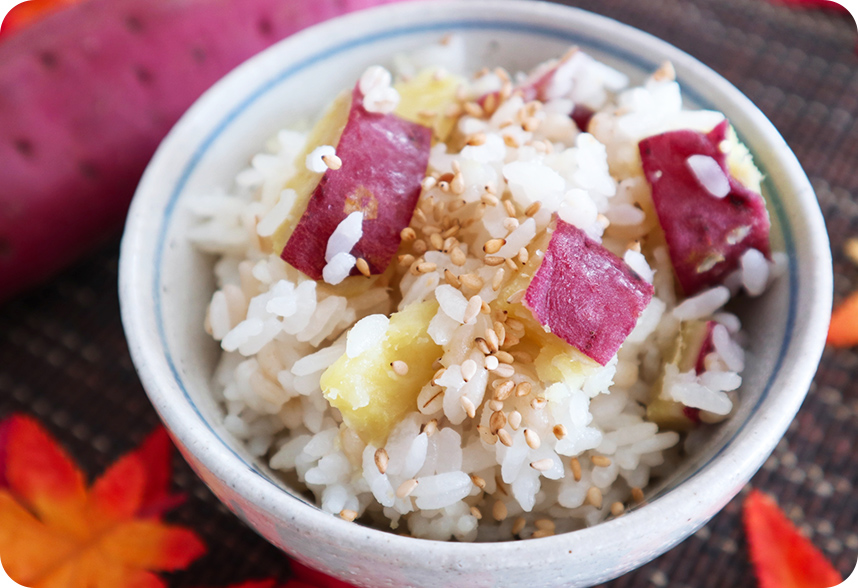
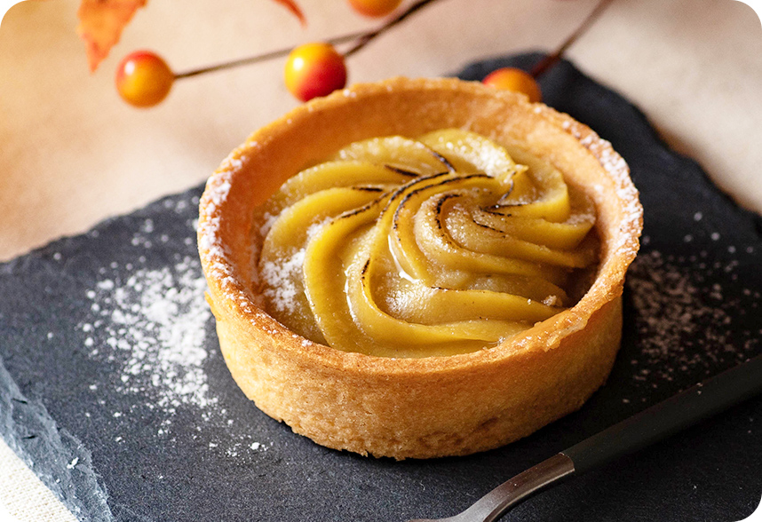

さつまいもの魅力を世界中に広めたい。
農家さんのさつまいも愛をたくさんの人に伝えたい。
そんな想いから生まれたのが、
“さつまいもアイドル いも娘”
個性豊かな”いも娘”たちが様々な活動を通して、さつまいもの素晴らしさを発信していきます🍠
2023.3.14
待望の神7爆誕！
2023.3.03
いも娘 神7選出投票スタート！
美と健康にピッタリ！
ビタミンや食物繊維が豊富なさつまいも。実はとっても栄養価の高い食品なんです。
楽しみ方無限大！
甘くてホクホクしたさつまいもは、ご飯のおかずからスイーツまで幅広く楽しめます。
自然な甘さで美味しい
口当たりがよく優しい甘さのさつまいも。子どもから大人まで美味しく食べられます。
美と健康にピッタリ！
ビタミンや食物繊維が豊富なさつまいも。実はとっても栄養価の高い食品なんです。
楽しみ方無限大！
甘くてホクホクしたさつまいもは、ご飯のおかずからスイーツまで幅広く楽しめます。
自然な甘さで美味しい
口当たりがよく優しい甘さのさつまいも。子どもから大人まで美味しく食べられます。
Web3、Crypto（NFT、メタバースなど）を広く世界に浸透させ、共に時代を変革していく、実践型のラボ。 年齢、性別に関係なく、さまざまなバックグラウンドの仲間と一緒に「社会をよりよい方向へ変革すること」を目指した未来志向型コミュニティ。
SNSにて活動を発信中！